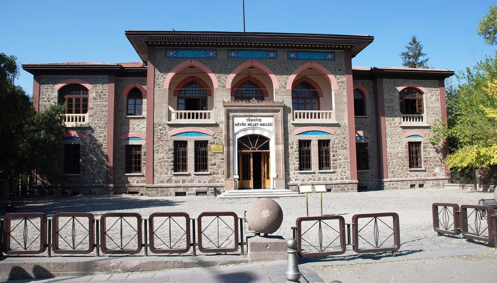
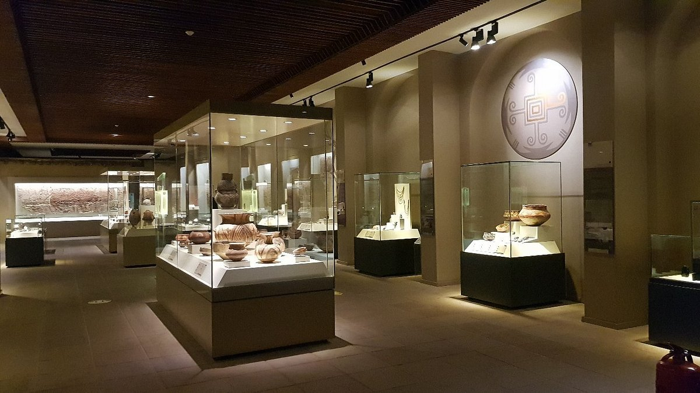
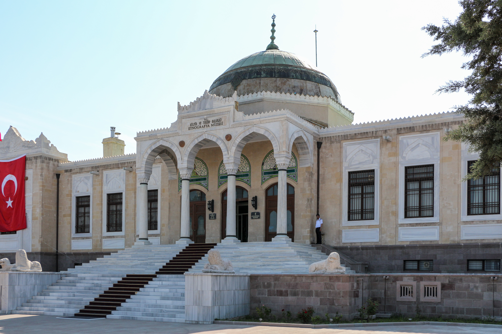
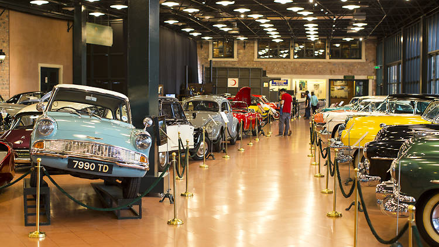

1. I. TBMM (Kurtuluş Savaşı Müzesi)

Ulus Meydanı'nda bulunan ve 1920'de açılan ilk meclis binası. Cumhuriyetin ilan edildiği sıralarda mebusların oturduğu sıraları görmek tarihi hissettiriyor.

Ulus Meydanı'nda bulunan ve 1920'de açılan ilk meclis binası. Cumhuriyetin ilan edildiği sıralarda mebusların oturduğu sıraları görmek tarihi hissettiriyor.

Ankara Kalesi'nin hemen altında bulunan bu müze, 1997'de Avrupa'da Yılın Müzesi seçilmiştir. Hititlerden Friglere kadar binlerce yıllık tarihe ev sahipliği yapar.

Geleneksel Türk kültürüne ait eşyaların sergilendiği müze. Ayrıca Anıtkabir yapılana kadar Atatürk'ün naaşına 15 yıl boyunca ev sahipliği yapmıştır.

Ankara Kalesi'nin girişinde yer alan eski bir kervansaray. İçerisinde eski arabalar ve iletişim araçları gibi harika sanayi tarihi eserleri bulunuyor.